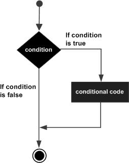
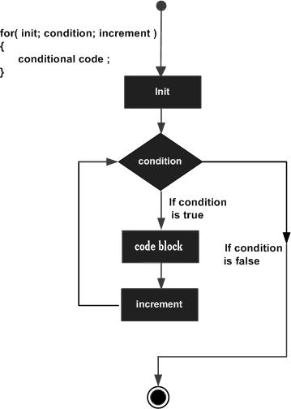

控制流
控制流是程序执行中所有可能的事件顺序的一个抽象表示。包括顺序，分支，循环。C语言提供了多种控制结构。
分支结构
分支判断结构要求程序员指定一个或多个要评估或测试的条件，以及条件为真时要执行的语句（必需的）和条件为假时要执行的语句（可选的）。
C语言把任何非零和非空的值假定为 true，把零或 null 假定为 false。
if-else 语句
if-else 语句由一个布尔表达式后跟一个或多个语句组成。
if-else 流程图
流程图

if-else 语法
语法
if(condition-expression){
statement(s);
...
}
else if(condition-expression){
statement(s);
...
}
...
else{
statement(s);
...
}
switch-case 语句
一个 switch 语句允许测试一个变量等于多个值时的情况。每个值称为一个 case，且被测试的变量会对每个 switch-case 进行检查。
switch-case 流程图
流程图
switch-case 语法
语法
switch(expression){
case constant-expression :
statement(s);
break;
case constant-expression :
statement(s);
break;
...
default :
statement(s);
break;
}
switch-case 注意事项
注意事项
- switch 语句中的 expression 必须是一个整型或枚举类型，或者是一个 class 类型，其中 class 有一个单一的转换函数将其转换为整型或枚举类型。
- 在一个 switch 中可以有任意数量的 case 语句。每个 case 后跟一个要比较的值和一个冒号。
- case 的 constant-expression 必须与 switch 中的变量具有相同的数据类型，且必须是一个常量或字面量。
- 当被测试的变量等于 case 中的常量时，case 后跟的语句将被执行，直到遇到 break 语句为止。
- 当遇到 break 语句时，switch 终止，控制流将跳转到 switch 语句后的下一行。
- 不是每一个 case 都需要包含 break。如果 case 语句不包含 break，控制流将会 继续 后续的 case，直到遇到 break 为止。
- 一个 switch 语句可以有一个可选的 default case，出现在 switch 的结尾。default case 可用于在上面所有 case 都不为真时执行一个任务。default case 中的 break 语句不是必需的。
循环结构
循环语句允许我们多次执行一个语句或一组语句。
while 循环
只要给定的条件为真，while 循环语句会重复执行目标语句。
while-loop 流程图
流程图
while 语法
语法
while(condition-expression){
statement(s);
...
}
do-while 循环
do-while 循环与 while 循环类似，但是 do-while 循环在尾部检测循环条件，并会确保至少执行一次循环语句。
do-while-loop 流程图
流程图
do-while 语法
语法
do{
statement(s);
...
}while(condition-expression);
for 循环
for 循环允许我们将循环变量初始化，循环条件，循环变量更新写在一起。更加方便直观。
for-loop 流程图
流程图

for-loop 语法
for (init; condition; update){
statement(s);
...
}
for-loop 注意事项
注意事项
- for后面的三部分语句都可以留空，但分号必须有。
- 分号起着分隔语句的作用。
- 如果 condition-expression 留空，则默认为 true。
break语句与continue语句
break语句
break语句可以用于从for、while与do-while循环中提前退出，就如同从switch语句中提前退出一样。break语句能使程序从switch语句或最内层循环中立即跳出。
continue语句
continue语句用于使for、while或do-while语句开始下一次循环的执行。
- 在while与do-while语句中，continue语句的执行意味着立即执行测试部分；
- 在for循环中，则意味着使控制转移到递增循环变量部分。
continue语句只用于循环语句，不用于switch语句。某个循环包含的switch语句中的continue语句，将导致进入下一次循环。
goto 语句与 label 标号
C语言提供了跳转的goto语句以及标记跳转位置的标号。从结构化程序设计的理论上讲，goto语句是没有必要的，实践中不使用goto语句也可以很容易的写出代码。C语言提供的goto语句是汇编代码层级的抽象。
流程图

语法
goto label;
...
label: statement;
注意事项
goto 语句只能跳转到同一函数内的lable标号位置。
label 可以是任何除C关键字以外的纯文本，可以设置在同函数的任何位置。
- 任何使用 goto 语句的程序可以改写成不需要使用 goto 语句的形式。
- 不建议使用 goto 语句。